ทฤษฎีบทของนอร์ตัน และการแปลงแหล่งจ่าย Norton's theorem — the same network as a current source in parallel with one resistor
Norton's theorem and source transformation The same network as a current source in parallel with one resistor
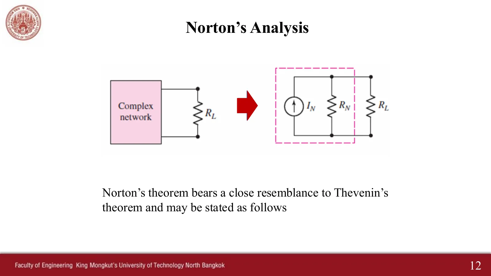
สไลด์บทที่ 5 หน้า 12 · แตะรูปเพื่อขยายChapter 5 slides, p. 12 · tap to enlarge
สไลด์หน้า 12: เครือข่ายเดียวกันแทนได้อีกแบบด้วยแหล่งจ่ายกระแส \(I_N\) ขนานกับ \(R_N\) ขั้นตอนเหมือนเทวินิน ต่างกันที่ขั้นที่ 2: ลัดวงจรขั้ว AB แล้วหากระแสที่ไหลจาก A ไป B (ในภาพจำลองเป็นแอมมิเตอร์ จุดวิ่งผ่านลวดลัด และตัวต้านทานที่ถูกลวดลัดคร่อมจะไม่มีกระแส) ส่วน \(R_N\) หาแบบเดียวกับ \(R_{th}\) และวงจรสมมูลทั้งสองแปลงไปมาได้ด้วยการแปลงแหล่งจ่าย \(V_{th} = I_N R_N\) (หน้า 15) หน้านี้มี 6 โจทย์ เรียงทีละข้อ (Ex 4, Ex 5, แบบฝึกหัด 5.1 Ex.3 เรื่องการแปลงแหล่งจ่าย และแบบฝึกหัด 5.2 Ex.2, Ex.4, Ex.6) พร้อมภาพจำลองการแปลงแหล่งจ่ายและตารางเทวินิน ⇄ นอร์ตันของทุกข้อ
Slide p. 12: the same network can also be replaced by a current source \(I_N\) in parallel with \(R_N\). The steps match Thévenin's except step 2: short terminals AB and find the current flowing from A to B (in the simulations an ammeter: the dots run through the short, and a resistor bridged by the short carries nothing). \(R_N\) is found exactly like \(R_{th}\), and the two equivalents turn into each other by a source transformation, \(V_{th} = I_N R_N\) (p. 15). This page has 6 problems, one after another (Ex 4, Ex 5, exercise 5.1 Ex.3 on source transformation, and exercises 5.2 Ex.2, Ex.4, Ex.6), with a source-transformation simulation and a Thévenin ⇄ Norton table of every problem.
\(I_N = I_{sc}\): remove the load, short terminals A–B and find the current from A to B through the short.
\(R_N = R_{th}\) (kill the sources and look into A–B, as for Thévenin) and \(V_{th} = I_N R_N\): any two give the third.
A voltage source \(v_s\) in series with \(R_s\) turns into a current source \(i_s = v_s/R_s\) in parallel with \(R_s\) (and back), with the same \(R_s\); the arrow of \(i_s\) points toward the + side of \(v_s\).
The two are equivalent only at the terminals: the load gets the same current and voltage for every value, but the heat in \(R_s\) differs.
Reconnect the load to the Norton equivalent and use the current divider: \(I_L = \frac{R_N}{R_N + R_L} I_N\).
The six steps match Thévenin's except step 2 (short the terminals and find the current \(I_N\)), step 5 (draw \(I_N\) in parallel with \(R_N\)) and step 6, which uses the current divider \(I_{load} = I_N R_N/(R_N + R_{load})\). Page 15 sums up: the Norton equivalent is a source transformation of the Thévenin equivalent, hence \(V_{oc} = R_{th} i_{sc}\).
สไลด์หน้า 13 พิมพ์หัวข้อว่า "Step to use Thevenin's Analysis" แต่เนื้อหาเป็นขั้นตอนของนอร์ตัน (หา \(I_N\) จากการลัดวงจร)
Slide p. 13 is headed "Step to use Thevenin's Analysis", but its content is the Norton steps (\(I_N\) from a short circuit).
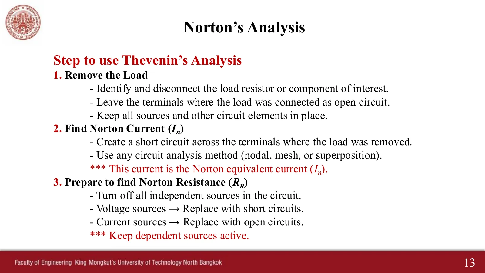
สไลด์หน้า 13 · แตะรูปเพื่อขยายSlide p. 13 · tap to enlarge
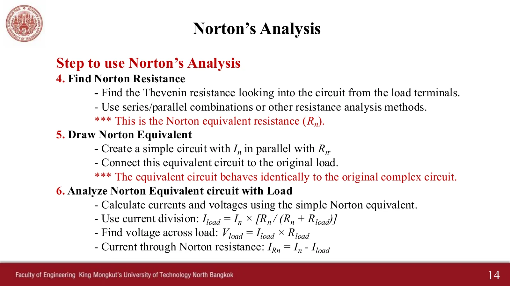
สไลด์หน้า 14 · แตะรูปเพื่อขยายSlide p. 14 · tap to enlarge
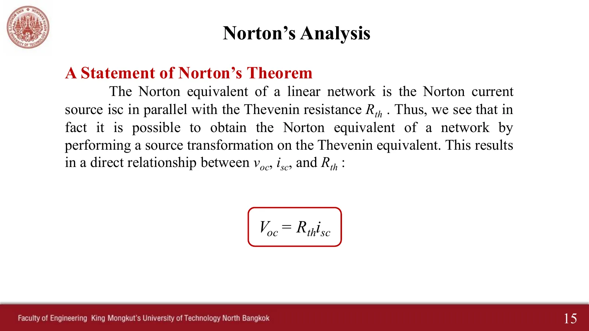
สไลด์หน้า 15 · แตะรูปเพื่อขยายSlide p. 15 · tap to enlarge
ดูห้าขั้นของนอร์ตันที่ผู้สอนเขียนในห้อง (พ.ศ. 2564)See the five Norton steps as written in class (2021)
Ex 4: วงจรเดียวกับ Ex 3 ใช้ทฤษฎีบทของนอร์ตันหากระแสผ่าน 2 Ω
Ex 4: the circuit of Ex 3; use Norton's theorem to find the current through the 2 Ω
สไลด์บทที่ 5 หน้า 16 · Hayt Practice 5.6
Chapter 5 slides, p. 16 · Hayt Practice 5.6
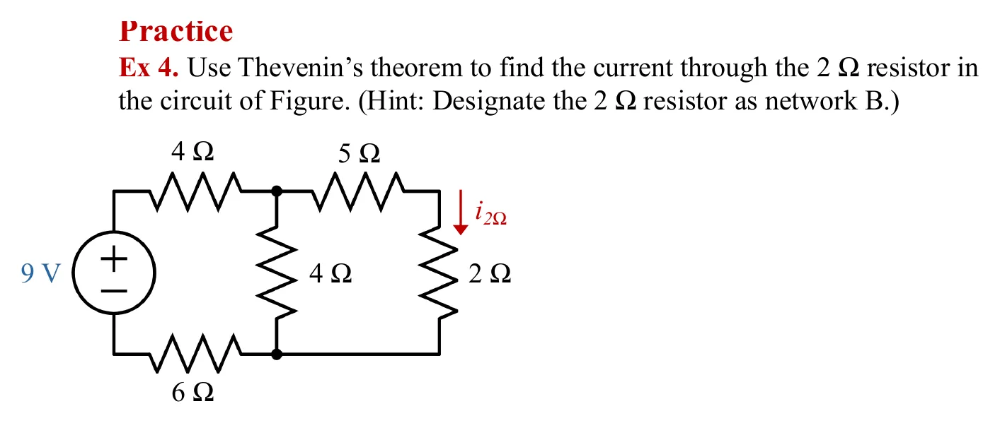
โจทย์จากสไลด์หน้า 16 · แตะรูปเพื่อขยายThe problem, slide p. 16 · tap to enlarge
ฉบับแจกพิมพ์ว่า "Use Thevenin's theorem" ซ้ำกับ Ex 3 แต่ข้อนี้อยู่ในหัวข้อนอร์ตัน และในห้องผู้สอนทำด้วยนอร์ตัน หน้านี้จึงทำแบบนอร์ตัน
The handout prints "Use Thévenin's theorem", as in Ex 3, but this one sits in the Norton section and the teacher solved it by Norton's theorem in class, so this page does too.
ดูเฉลยที่ผู้สอนเขียนในห้องSee the teacher's in-class working
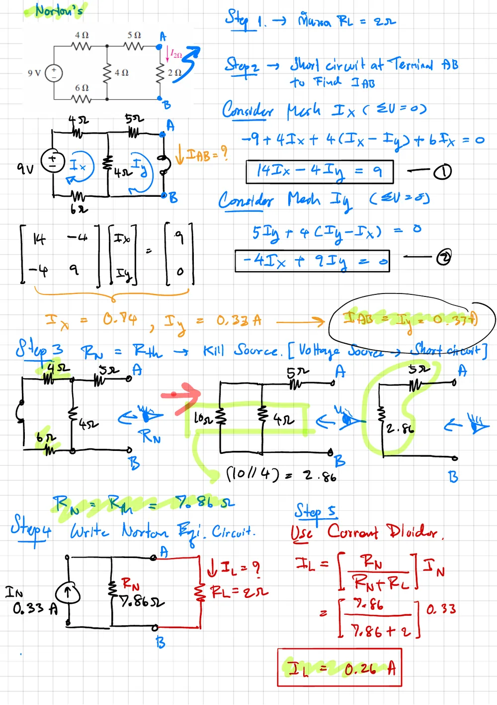
\(I_N\) = 0.33 A (วิธีเมช), \(R_N\) = 7.86 Ω และตัวแบ่งกระแสได้ \(I_L\) = 0.26 A\(I_N\) = 0.33 A (meshes), \(R_N\) = 7.86 Ω, and the current divider gives \(I_L\) = 0.26 A
2
Ex 5: หาวงจรสมมูลเทวินินและนอร์ตันที่ขั้ว A–B
Ex 5: find the Thévenin and Norton equivalents at terminals A–B
สไลด์บทที่ 5 หน้า 17 · Hayt Practice 5.7 · ในห้องทำแบบเทวินินและให้แบบนอร์ตันเป็นการบ้าน
Chapter 5 slides, p. 17 · Hayt Practice 5.7 · in class the Thévenin part was worked and the Norton part set as homework
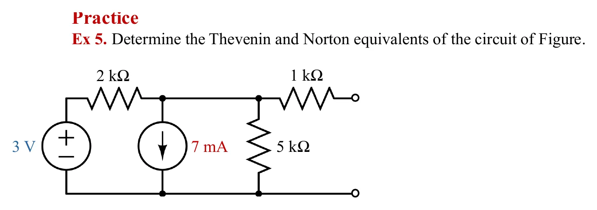
โจทย์จากสไลด์หน้า 17 · แตะรูปเพื่อขยายThe problem, slide p. 17 · tap to enlarge
ดูสไลด์และเฉลยที่ผู้สอนเขียนในห้องSee the in-class slide and working
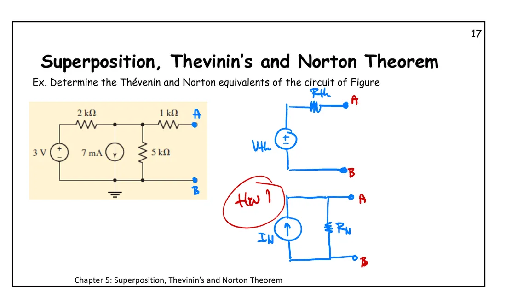
หน้า 17: วาดวงจรสมมูลทั้งสองแบบ และให้แบบนอร์ตันเป็นการบ้านp. 17: both equivalents drawn, the Norton one set as homework
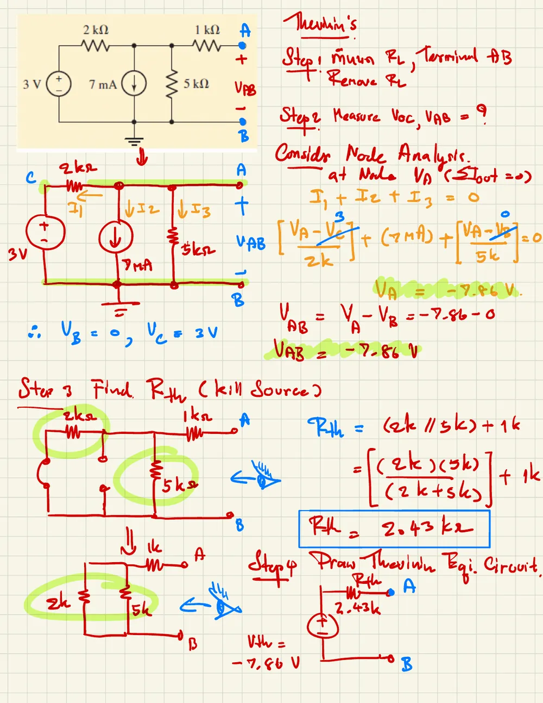
แบบเทวินิน: \(V_{AB}\) = −7.86 V (วิธีโนด) และ \(R_{th}\) = 2.43 kΩThévenin: \(V_{AB}\) = −7.86 V (nodal) and \(R_{th}\) = 2.43 kΩ
Source transformation is the same tool that links Thévenin and Norton (p. 15), and it is a shortcut in several problems, e.g. exercise 5.1 Ex.2 on page 5.1 and homework 2 on page 5.4.
Left is a practical voltage source (\(v_s\) in series with \(R_s\)), right the practical current source it turns into (\(i_s = v_s/R_s\) in parallel with \(R_s\)), both with the same \(R_L\). Slide \(R_L\) and see the load current agree for every value. Then press "open": the insides are nothing alike, as the left \(R_s\) carries no current while the right one keeps \(i_s\) circulating.
ดูสรุปการแปลงแหล่งจ่ายที่ผู้สอนเขียนในไฟล์เฉลยSee the teacher's summary of source transformation in the solutions file
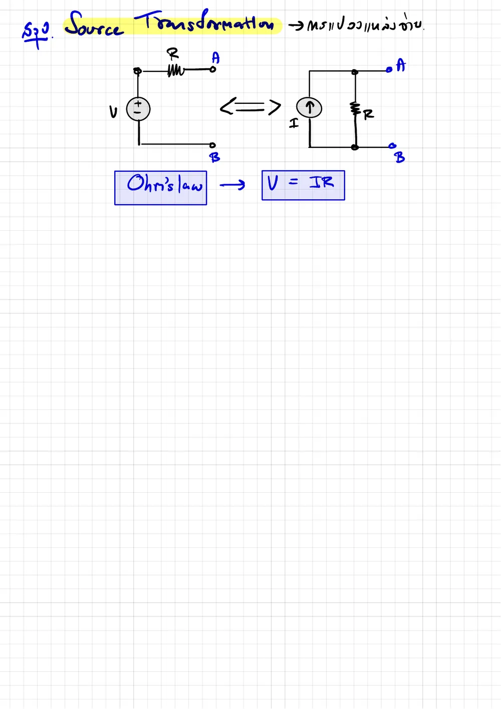
สรุปการแปลงแหล่งจ่าย: \(V\) อนุกรม \(R\) ⇄ \(I\) ขนาน \(R\) โดย \(V = IR\)Source transformation: \(V\) in series with \(R\) ⇄ \(I\) in parallel with \(R\), with \(V = IR\)
Exercise sheet 5.2, Ex.2 (the circuit of Ex.1) · handwritten solution available
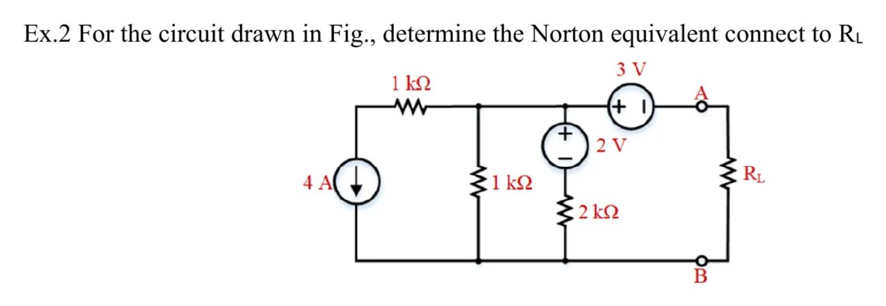
โจทย์แบบฝึกหัด Ex.2 · แตะรูปเพื่อขยายExercise Ex.2 · tap to enlarge
ดูเฉลยลายมือSee the handwritten solution
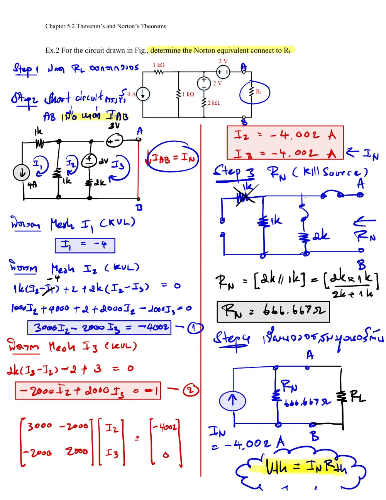
เฉลยได้ \(I_N\) = −4.002 A เพราะใส่ 0 แทน −1 ในเมทริกซ์ (ดูคำตอบข้างบน)The solution gets \(I_N\) = −4.002 A because the matrix has 0 instead of −1 (see the answer above)
\(V_{oc}\) with the terminals open, \(I_{sc}\) with them shorted, and \(R_{th}\) with the sources killed. The last column checks that \(V_{oc} = I_{sc} R_{th}\) every time: with \(V_{oc}\) and \(I_{sc}\) measured, \(R_{th} = V_{oc}/I_{sc}\) without killing any source.
ลองทำดู 1 — สมมูลแค่ที่ขั้ว
ส่วน A ตั้ง \(v_s\) = 12 V, \(R_s\) = 4 Ω แล้วกด "ลัดวงจร": กระแสที่โหลดทั้งสองวงจร = 3 A = \(i_s\)
กด "เปิดวงจร": แรงดันที่ขั้วทั้งสองวงจร = 12 V แต่ \(R_s\) ฝั่งขวาร้อน 36 W ส่วนฝั่งซ้าย 0 W
In section A set \(v_s\) = 12 V, \(R_s\) = 4 Ω and press "short": the load current is 3 A = \(i_s\) in both circuits.
Press "open": both terminals read 12 V, but the right \(R_s\) burns 36 W while the left one burns 0 W.
Problem 3: no transformation changes \(i\) in the 13 MΩ (hover over the 13 MΩ in the last stage: −0.5775 µA).
Try this 2 — the short and the bridged resistor
Problem 6 (exercise Ex.6), step 2: the short bridges the 30 Ω, so the 30 Ω carries nothing (crossed out) and \(I_N = I_2\) = 20/3 A.
Problem 4 (exercise Ex.2): the solution gets \(I_N\) = −4.002 A because it puts 0 instead of −1 on the right of equation (2); this page gets −4.0035 A, which matches \(V_{th}/R_{th}\) = −2669/666.67.
Problem 2 (Ex 5): the short at AB ties the 1 kΩ straight down, so KCL at the top-middle node is written again with an extra \(V/1\,\text{k}\) term.
Try this 3 — two give the third
Problem 1 (Ex 4): \(I_N\) = 18/55 A and \(R_N\) = 55/7 Ω give \(V_{th}\) = (18/55)(55/7) = 18/7 V, the same as Ex 3 on page 5.2.
Section B: every row has \(V_{oc} = I_{sc} R_{th}\).
Question: if the network has no independent sources at all, what are \(V_{oc}\) and \(I_{sc}\), and can \(R_{th}\) still be found this way?
Chapter 5 slides, pp. 12–17 · in-class slides pp. 14, 17 · exercise sheets 5.1 Ex.3, 5.2 Ex.2, Ex.4, Ex.6 and solutions · Hayt §5.2–5.3, Practice 5.6, 5.7